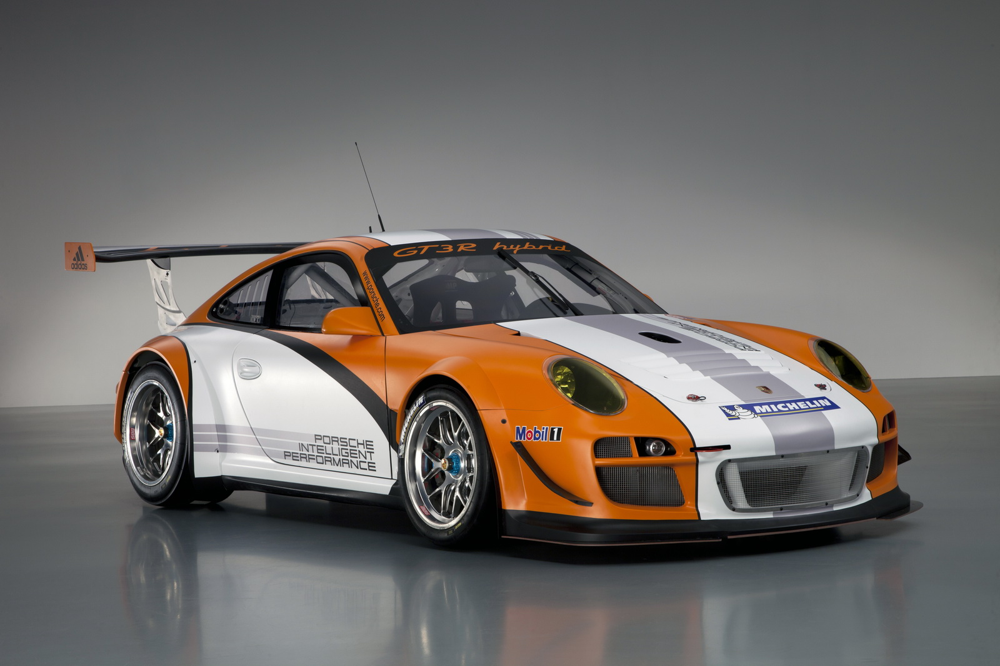
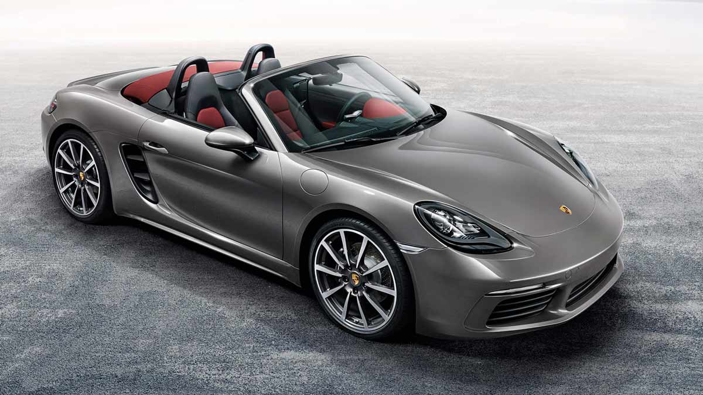
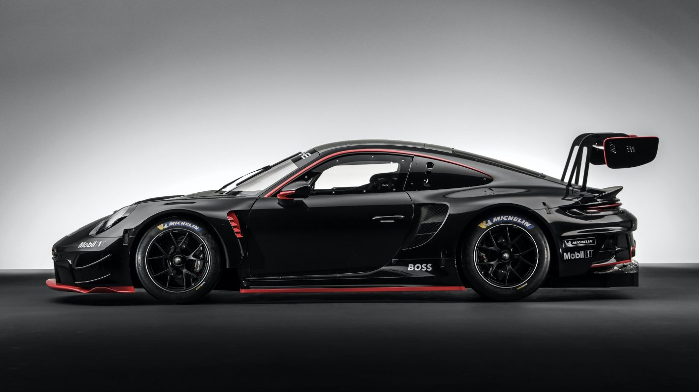
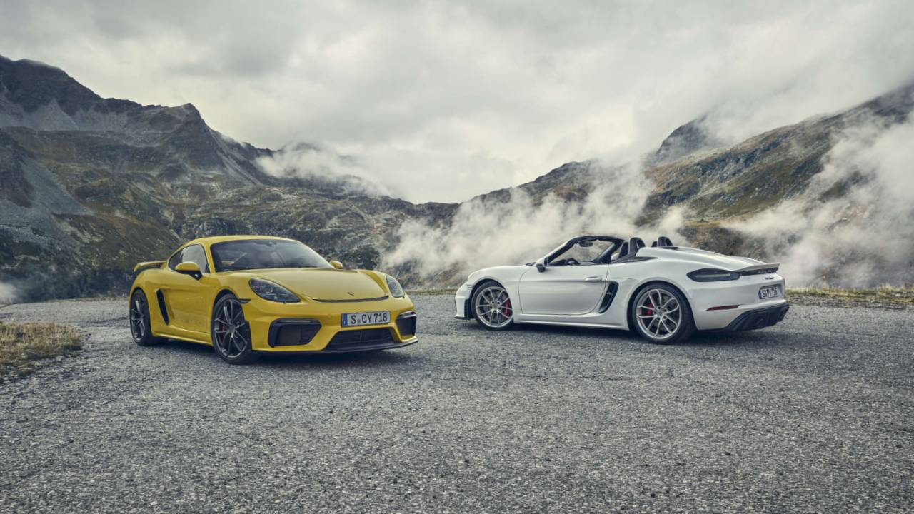

The Porsche name has become synonymous with sports cars and race cars because that is what company founders
Ferdinand Porsche and his son Ferdinand (“Ferry”) set out to build when they first set up shop with 200
workers in 1948.
While it is currently a thriving brand under the Volkswagen Automotive Group, standing alongside Lamborghini,
Audi, and Bugatti this car company has a colorful history and iconic cars list that goes way deeper than
most Cayenne, Macan and Panamera buyers will ever know.
Ferdinand Porsche’s first iconic vehicle was not under his own marque, but what we all know as “Volkswagen”
or “The People’s Car”. The Volkswagen Beetle was his creation and was the stepping stone to a racing history
with the 911 as a cornerstone. World War II changed things and the man was ousted out of the Volkswagen
company, forcing him and his son to form their own car company, Porsche
There first hit was the 356. Though sporting just 40 horsepower from a rear-mounted, slightly souped-up
Beetle engine, the first Porsche quickly made its mark with agile handling, as well as attributes almost
unknown among sportscars of the day — comfort and reliability. Porsche introduced its own engines in the
mid-1950s, along with more powerful versions of the 356. After the 356 came a true legend among modern
automobiles, the Porsche 911. Ahead of its time when introduced in 1964, the rear-engine 911 has continued
to evolve since then and is considered by most the ultimate sports car.
Porsche introduced a series of front-engine models in the 1970s, starting with the four-cylinder 924 (1976)
and the unrelated 928 powered by the company’s first V-8 engine (1978). From the 924 sprang the more
powerful and sophisticated 944 and 944 Turbo, and finally the 968 in the early ‘90s. Porsche retired both
the 968 and 928 in 1995 to focus on development of the rear-engine 911 and mid-engine Boxster.
Porsche is also synonymous with racing, and Porsche cars began competing almost immediately. To date, Porsche
cars have won an estimated 24,000 auto races around the world, including more than 50 class wins at Le Mans.
You can see why the way people talk about Porsche with reverence. No other car company has the same
credentials. No other car company has so many hits. Porsche has built some of the most amazing cars ever.

Porsche 911 GT3
On this technical basis, the engine of the new 911 GT3 draws a maximum power of 502 hp from exactly 3,996
cm³. With the standard 7-speed Porsche Doppelkupplung (PDK), the 911 GT3 sprints from 0 to 60 mph in a
mere 3.2 seconds. The thrust? Doesn‘t stop until it reaches an impressive 197mph. The 911 GT3 with
Touring Package is no less performance focused. With manual transmission, it passes the 60 mph mark in
just 3.7 seconds, with a top track speed of 199 mph.

Porsche 718 Cayman Boxster 2019
Both the Cayman T and Boxster T will be equipped with the base-model 718’s mid-mounted 2.0L flat-four
turbocharged engine, which produces 300-horsepower and 280 lb-ft of torque.
The 718 T will come standard with a 6-speed manual gearbox, and buyers will also have the option of
outfitting the car with a PDK transmission. Respectively, the car will sprint from 0-60 mph in 4.9
seconds in the manual and 4.5 seconds in the PDK version’s Sport Plus mode, while top speed is 170 mph.

Porsche Cayenne Turbo GT
At nearly the same horsepower output as a Lamborghini Urus, the new top-of-the-line Porsche Cayenne Turbo
GT comes with 640 PS (471 kW) from her 4-Liter Biturbo V8 engine, which is an increase of 90 PS (67 kW)
when compared to the Cayenne Turbo Coupé. Torque has been raised to 850 Nm for an acceleration figure
from 0 to 100 km/h in 3.3 seconds … this new Cayenne Turbo GT doesn’t run out of breath until she
reaches 300 km/h.

Porsche Unveils 911 GT3 R Race Car
The gold standard for factory 911 race cars, with the now-retired Porsche 911 RSR not yet having a
successor waiting in the wings. Homologated for competition in the GT3 class, the new GT3 R will be
raced in series such as IMSA, WEC and eventually the 24 Hours of Le Mans.
Like in previous iterations, the GT3 R improves upon the GT3 Cup in every imaginable way. This includes
what you’d typically expect, with more aerodynamics, an improved suspension geometry, fatter tires,
optimized electronic aids—and not least of all, more power—responsible for the overall transformation

Porsche Taycan Turbo S Cross Turismo
The interaction of the drive components produces impressive performance figures, both technically and
emotionally: with up to 560kW (750 HP) overboost is activated with Launch Control, both machines
accelerate the Taycan Turbo S from a standstill to 60 mph in 2.6 seconds. And this can be repeatedly
reproduced: consecutive acceleration is possible, up to a top track speed of 161 mph (with summer
tires).

Porsche 718 Cayman GT4 / 718 Boxster Spyder
With the introduction of the new Cross Turismo range of Porsche Taycan models in 2021, we’ve now entered
the second act of the company’s electrification strategy. The Porsche Taycan Cross Turismo carries over
the EV-platform and performance from its sedan counterpart, then amalgamates them with the
utilitarianism of a sporty crossover/estate. What this means is that you can expect the same 800-volt
battery architecture powering the car, with 93.4 kWh as the standard fare on all models (certain sedan
trims could be had with a smaller 79.2 kWh pack).


.jpeg "Porsche Macan GTS (2022 MY)")